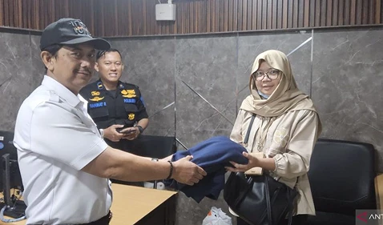
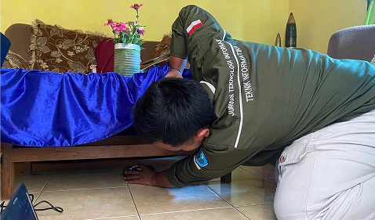
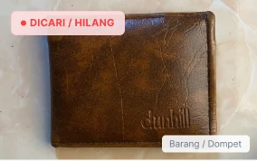

Selamat Datang di
POLIJE SIAGA
Polije Siaga hadir sebagai pusat informasi keamanan kampus yang memudahkan civitas akademika dalam melaporkan barang hilang, menemukan barang yang telah dilaporkan, mendapatkan informasi terkait kondisi keamanan kampus, serta mengakses kontak darurat.
LAYANAN KEAMANAN
Laporkan barang yang ditemukan atau kehilangan barang di lingkungan kampus dengan mudah melalui Polije Siaga.

Menemukan barang yang tertinggal ?
Laporkan barang temuanmu agar dapat segera diamankan dan dikembalikan kepada pemiliknya.

Menemukan barang yang tertinggal ?
Laporkan barang temuanmu agar dapat segera diamankan dan dikembalikan kepada pemiliknya.
ALUR PELAPORAN
Tiga langkah untuk mengurus barang temuan atau kehilangan di kampus polije
1
Laporan detail spesifik barang (warna, ciri khusus, lokasi terakhir, waktu kejadian) melalui form portal Polije Siaga
2
Tim satpam polije akan mencocokkan data laporan dengan database fisik barang yang tersimpan di posko keamanan
3
Laporan detail spesifik barang (warna, ciri khusus, lokasi terakhir, waktu kejadian) melalui form portal Polije Siaga
Update Terkini
Daftar Laporan Barang Hilang & Temuan
Pantau status barang hilang yang sedang dicari dan barang temuan yang telah diamankan di Posko Satpam Polije.

Dompet Kulit
Dompet kulit berwarna coklat pekat dengan merk dunhill.

Kunci Motor Honda Vario
Gantungan karet motif pita merah dengan remote alarm bawaan Honda.

Laptop Acer
Laptop merk acer berwarna silver.

Flashdisk 16 GB
Flashdisk ukuran 16 GB dengan kabel berwarna silver.